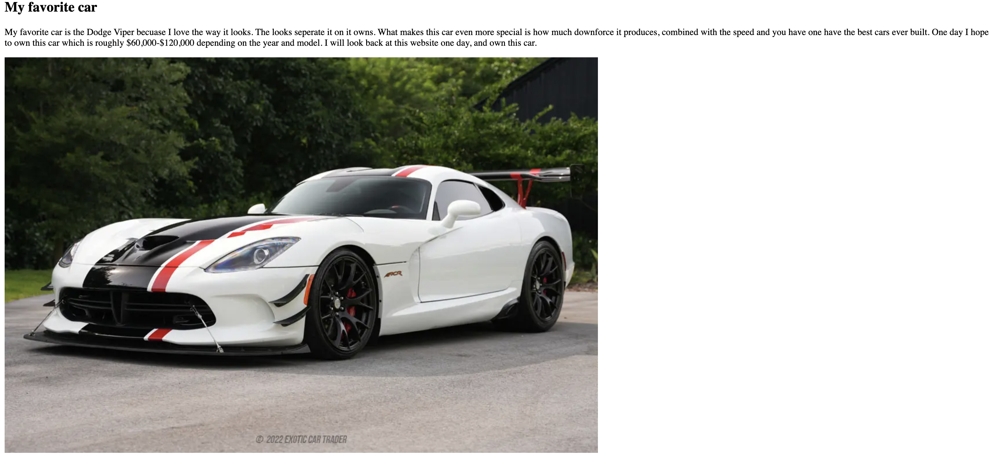
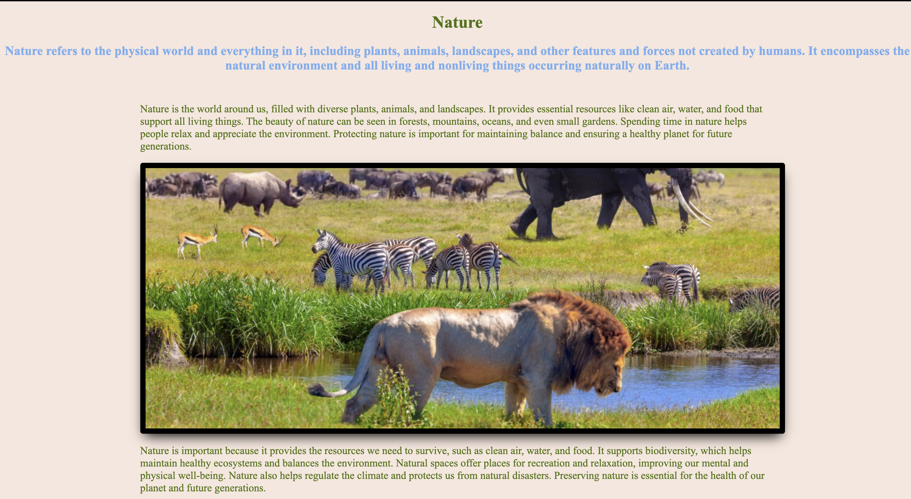
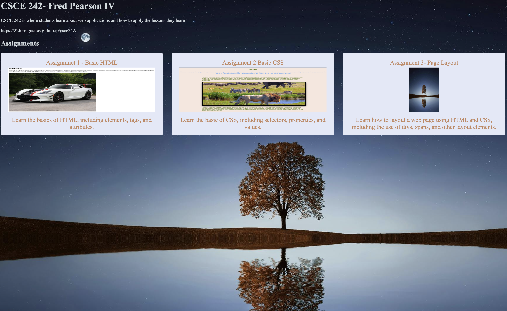
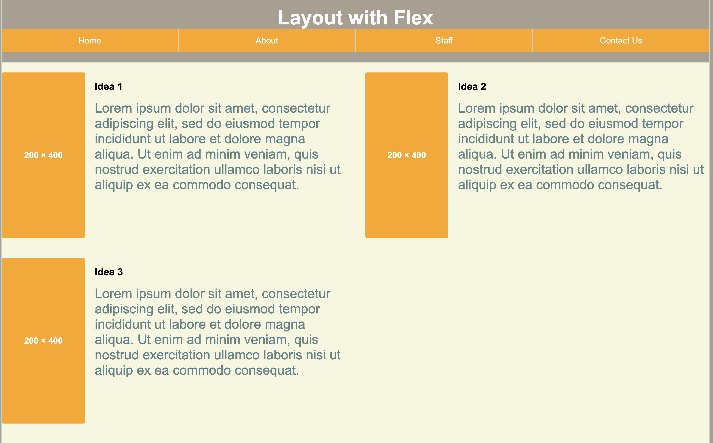
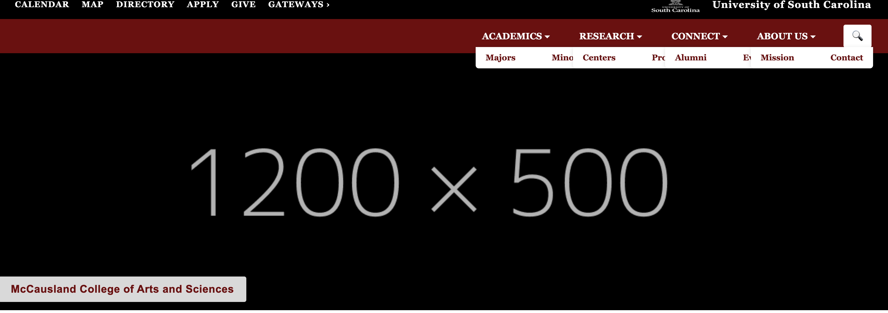
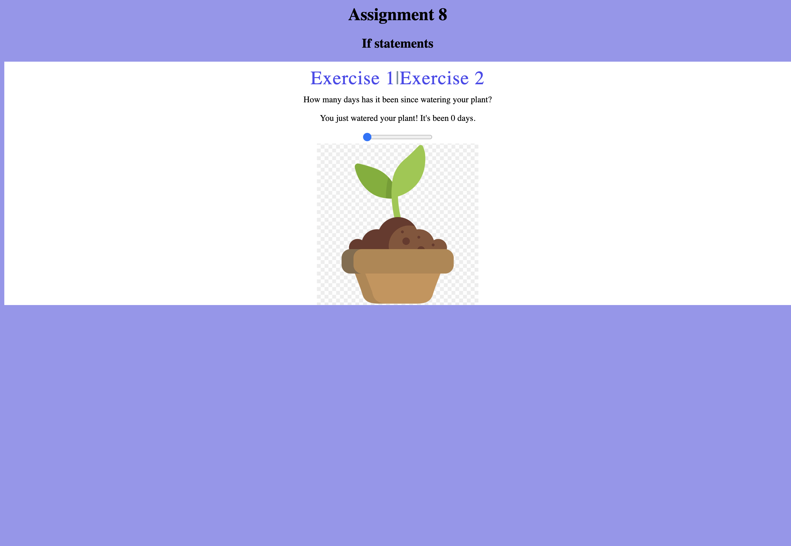
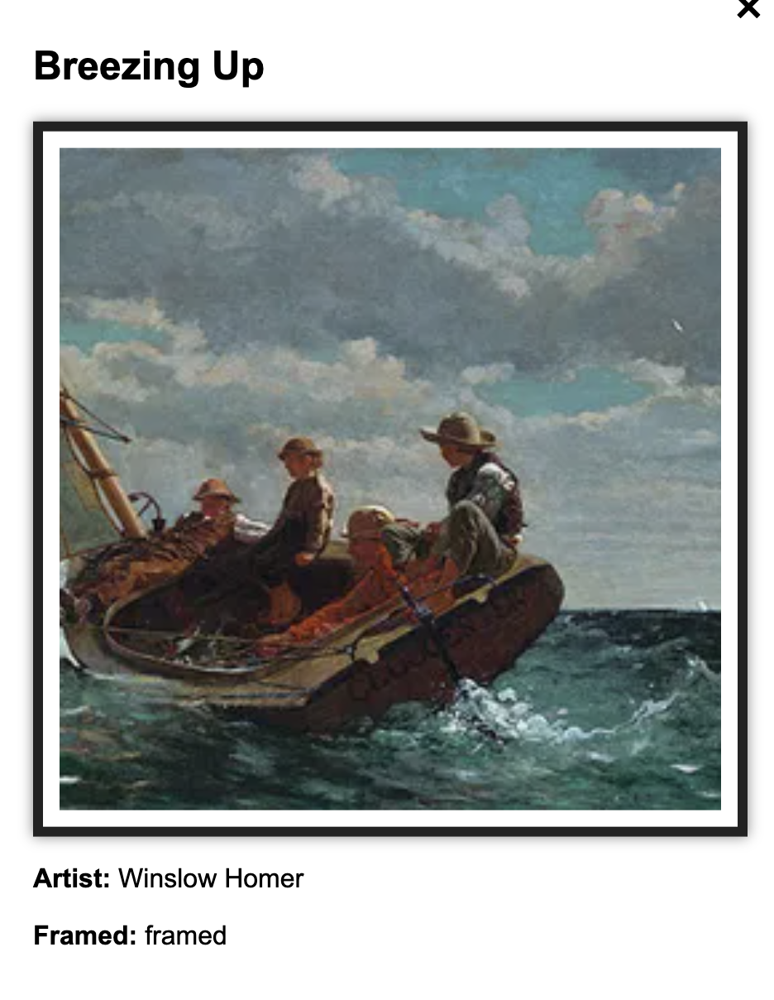

- Assignmnet 1 - Basic HTML

Learn the basics of HTML, including elements, tags, and attributes.I made the website about cars and my favorite car.
- Assignment 2 Basic CSS

Learn the basic of CSS, including selectors, properties, and values. With these skills I made a website about nature and the ecosystem.
- Assignment 3- Page Layout

Learn how to layout a web page using HTML and CSS, including the use of divs, spans, and other layout elements. I created a beautiful homepage layout to help me on my project.
- Assignment 4- Page Layout

Learn how to layout a web page using HTML and CSS, including the use of divs, spans, and other layout elements. I created a website layout to help me on my project.
-
Assignment 5- CSS Styling

Learn how to style a web page using CSS, including the use of colors, fonts, and layout techniques. I applied these skills to enhance the design of my project.
-
Assignment 8- JavaScript Hard-Basics

Learn how to implement advanced JavaScript concepts, including asynchronous programming and API integration.
-
Assignment 9- JavaScript Loops
Learn how to use loops in JavaScript to iterate over data and perform repetitive tasks. I applied these skills to create dynamic and interactive web pages.
-
Assignment 10- JavaScript Arrays
Learn how to use arrays in JavaScript to store and manipulate collections of data. I applied these skills to create dynamic and interactive web pages.
-
Assignment 11- JavaScript Objects

Learn how to use objects in JavaScript to represent and manipulate complex data structures. I applied these skills to create dynamic and interactive web pages.